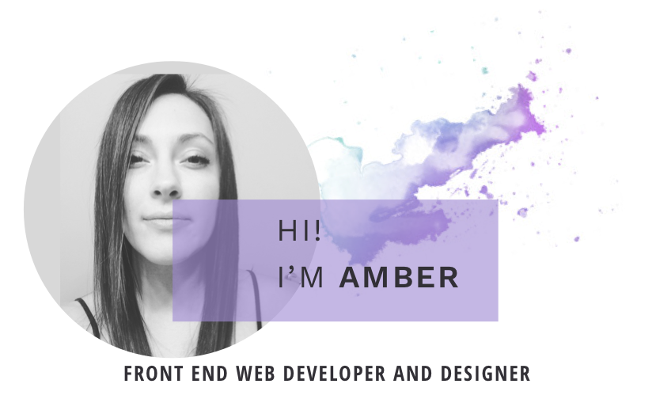

I recently graduated from Epicodus Code School where I studied development and design including classes like advanced CSS, Javascript, and Design. I have an interest and passion for good user experience and building great looking sites that make sense.
My whole life, I’ve had difficulty focusing on one field until now. My background and interests have varied pretty wildly. In my previous life I have been an Army Intelligence Analyst, a Lab Tech at many blood centers, and an Audio Technician for an ABC News Affiliate, but I never felt any of those truly suited me. It wasn’t until I met someone on a mountain biking trip who was an Epicodus Alumni that I even realized what coding was and how accessible it was to learn. Since deciding to do the design route at school I finally feel truly excited about a career path. I love the creativity involved in front end development and design as well as the almost unlimited possibilities for new education, growth, and job potential.
Good music, adventure sports, and great web design make me happy.